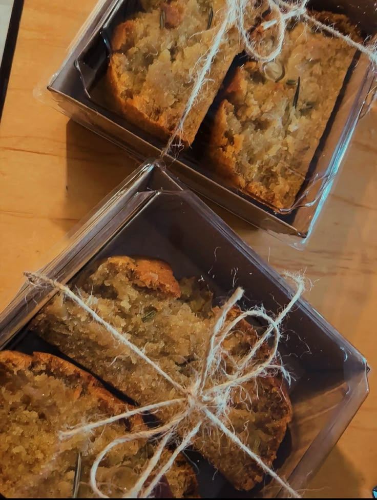
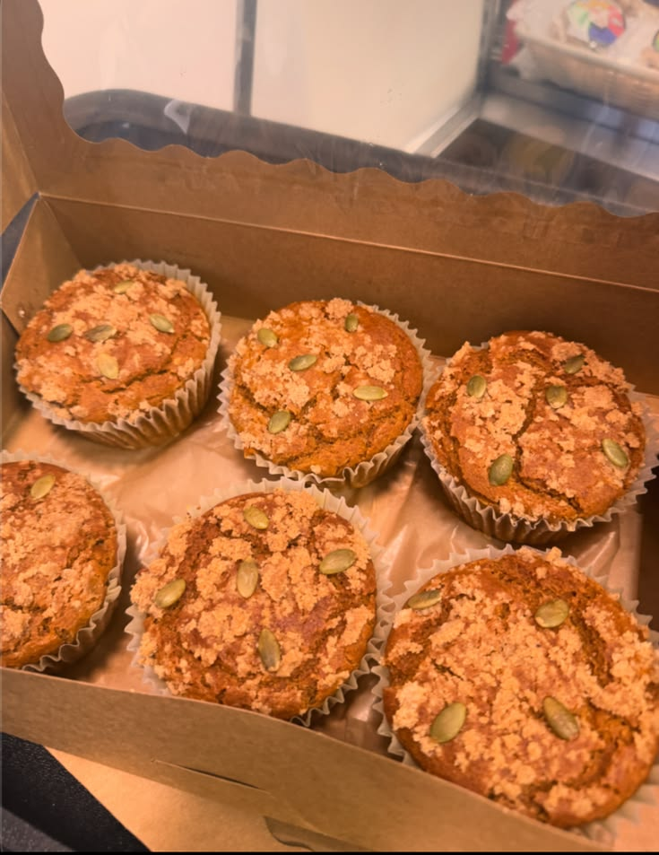

apple almond muffin

I run a small, independently owned home bakery where everything is made with care, creativity, and a commitment to being both gluten-free and vegan. What started as a personal passion has grown into a welcoming space for anyone looking to enjoy delicious baked goods without dietary compromises. Every item is crafted from scratch using thoughtfully chosen ingredients, ensuring rich flavors and satisfying textures that rival traditional baking. From soft, decadent cakes to perfectly chewy cookies, my bakery is all about proving that gluten-free and vegan treats can be just as indulgent, comforting, and memorable.
DELIGHTFUL TREATS is an allergy-free bakery that I opened from my very home all by myself. We serve muffins, cookies, brownies, cakes, and much more fresh organic treats, though we are mainly known for our amazing muffins.




Everything we bake is made out of fresh organic ingredients. We don't use refined sugar, seed oils, gluten, dairy, or eggs.
Our goal is to help those with allergies still enjoy tasty treats without any issues.